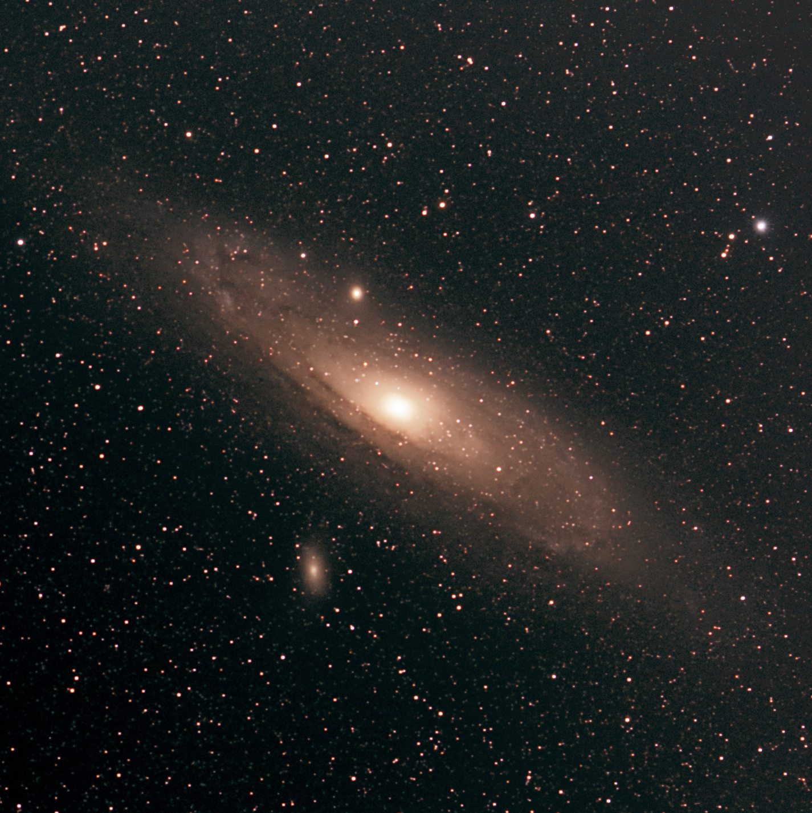
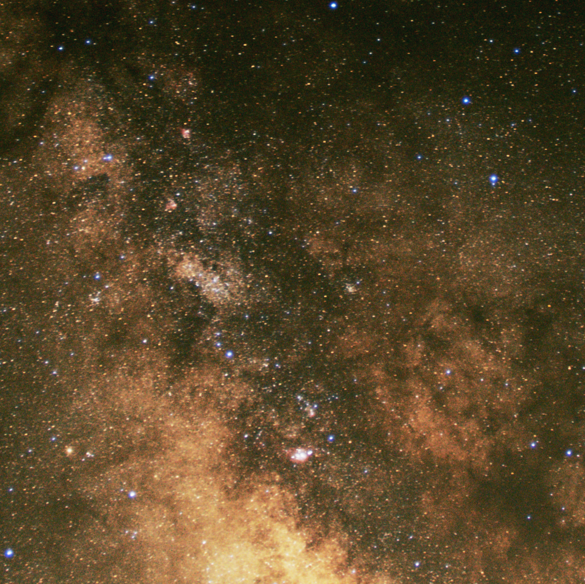
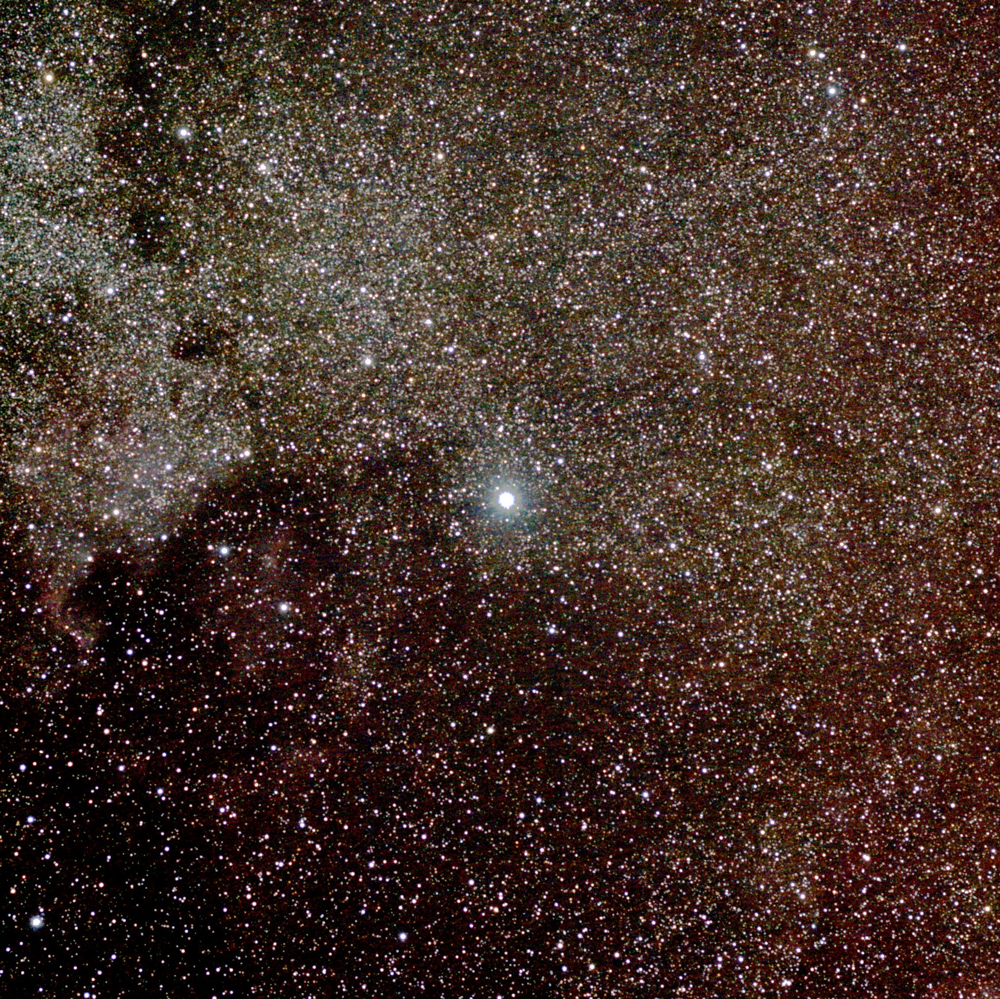
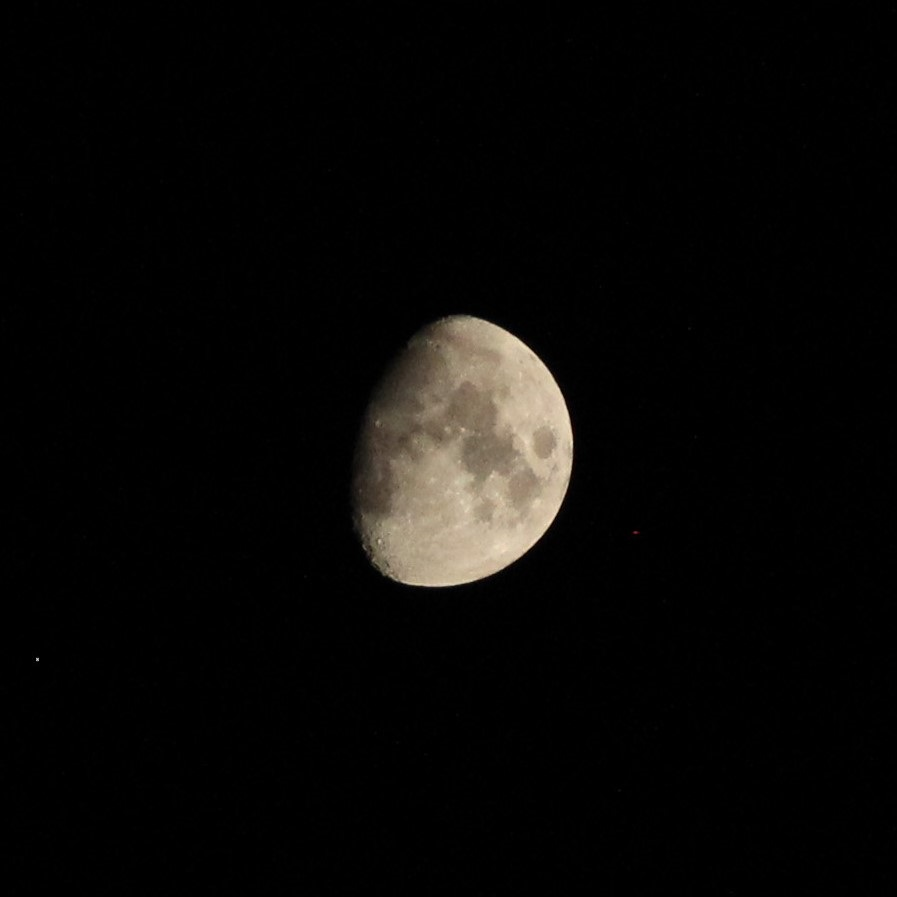
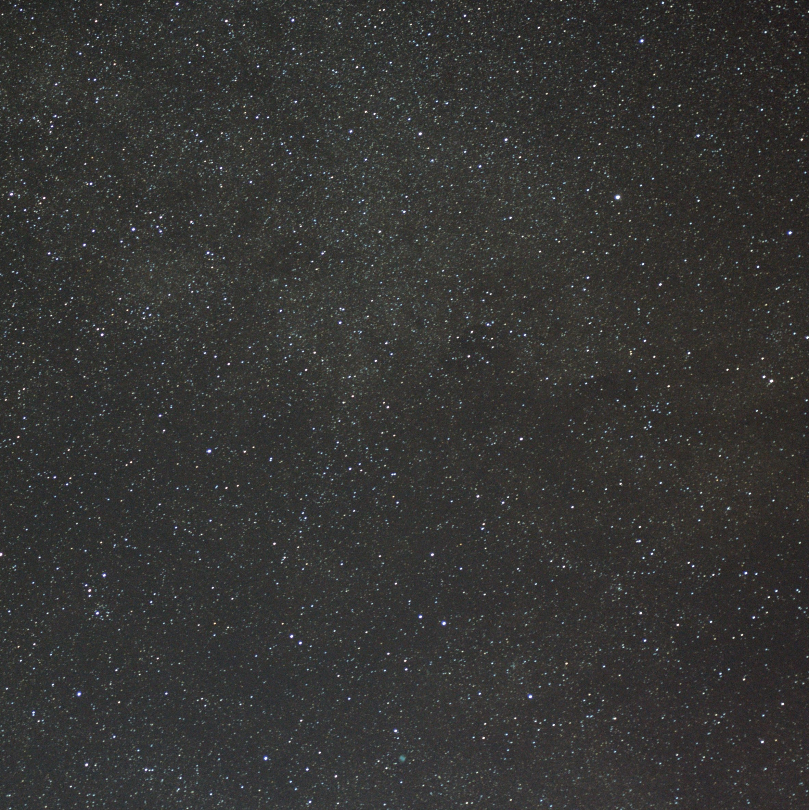
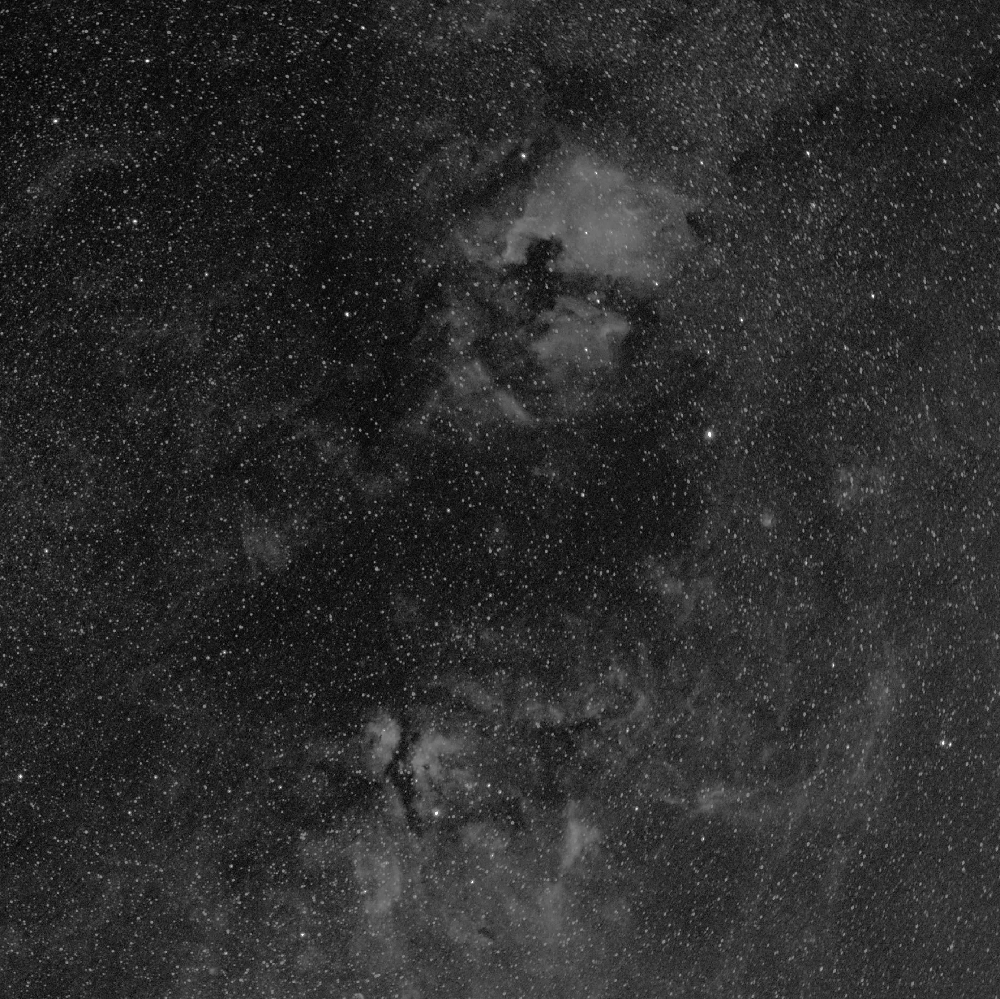
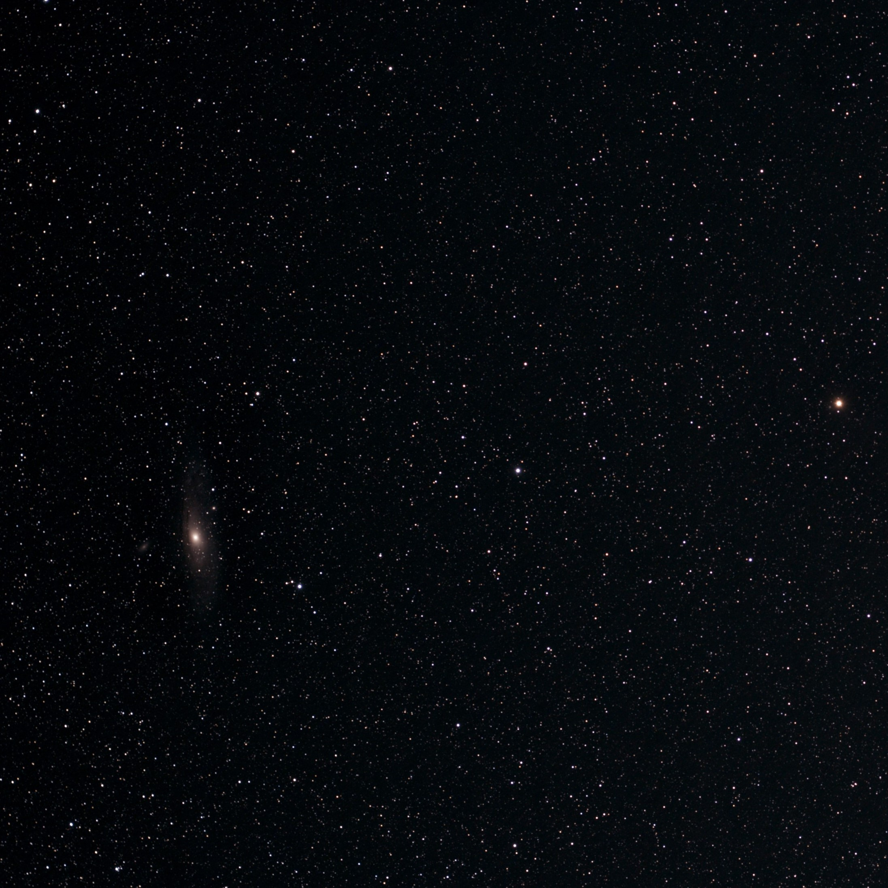

Astrophotography
As a hobby, I use various cameras to take pictures of the night sky. My main cameras are a Canon 60D (unmodified) for widefield imaging when traveling and an ASI1600mm pro for narrowband at home in light polluted environments.








